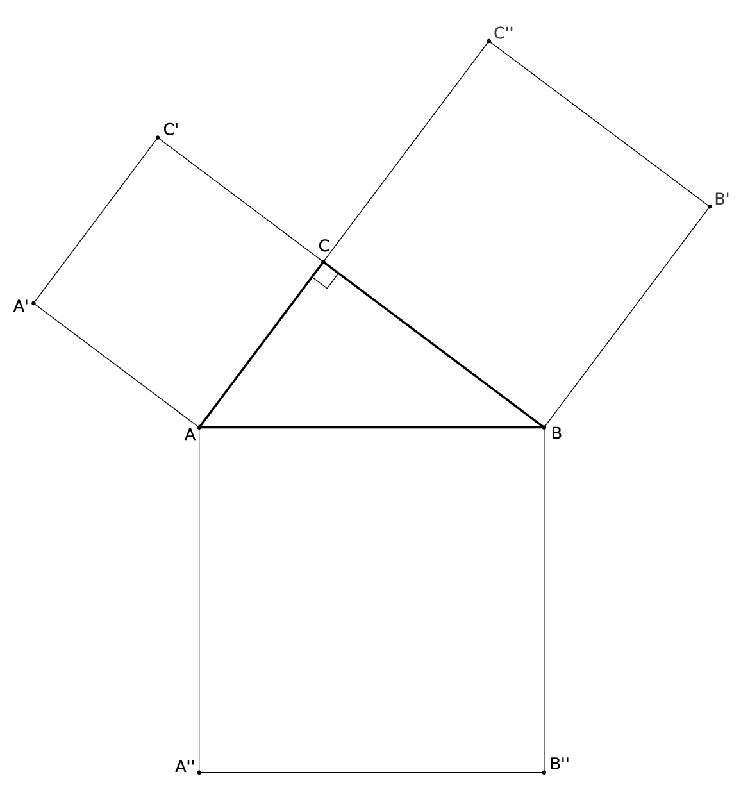

<<<<<<< HEAD
=======
>>>>>>> d41ad9d0cfbc94b2fa55013458037fadeb35182c
In this activity we will prove the most famous theorem of all.
Remind us, what is the most famous theorem of all and what exactly does it assert?
Euclid’s proof
What would one need to prove about the following diagram to prove the Pythagorean Theorem?

Let’s see if we can do this!
Draw a line perpendicular to that passes though both and . Call the intersection between this line and , point ;
call the intersection point between this line and , point . Explain why has half the area of rectangle
.
Explain why has half the area of square .
Explain why is congruent to .
Explain why area of square is equal to the area of rectangle .
Use similar ideas to complete a proof the Pythagorean Theorem.
The converse
What is the converse to the Pythagorean Theorem? Is it true? How do you prove it?